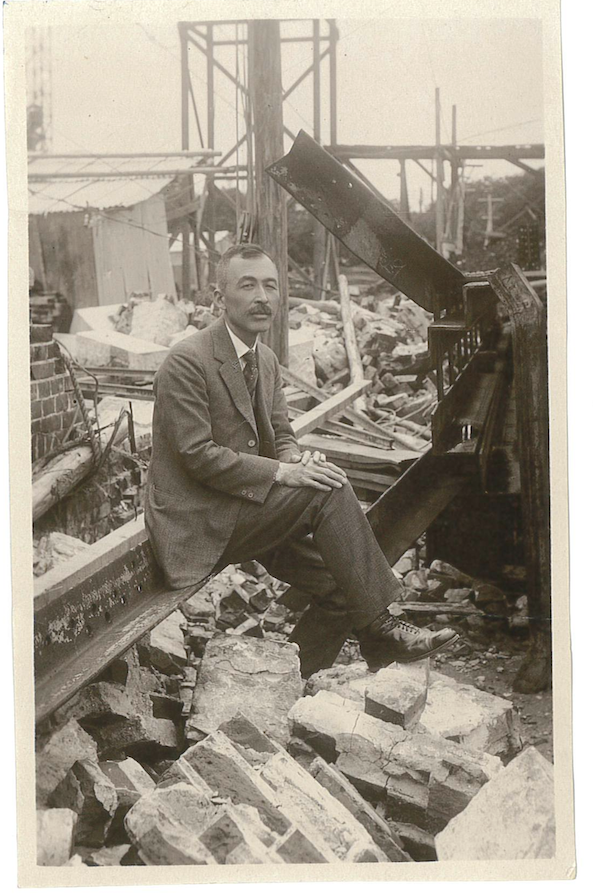
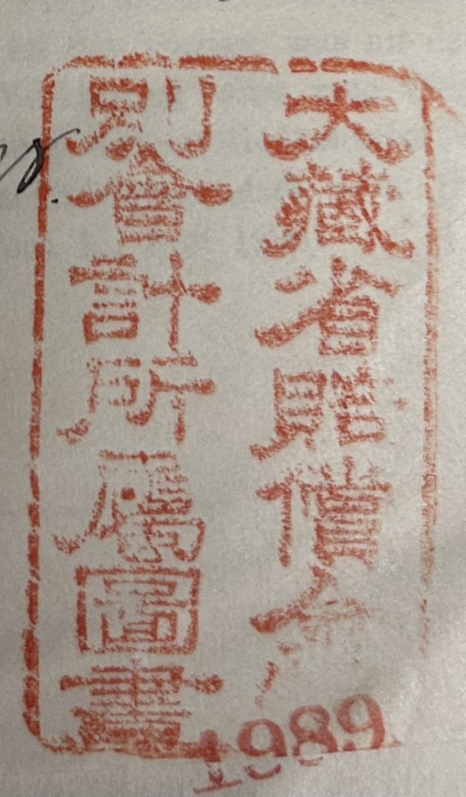
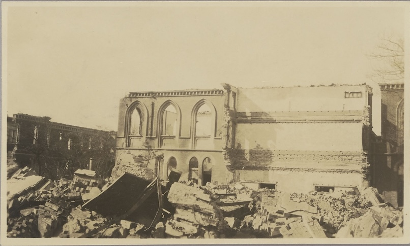
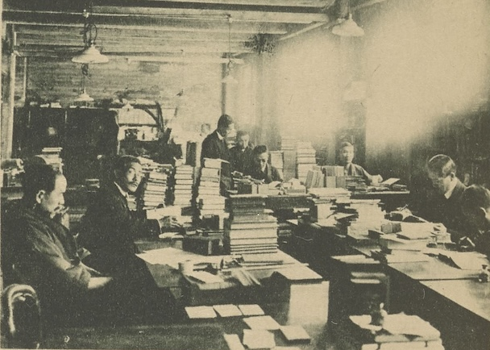
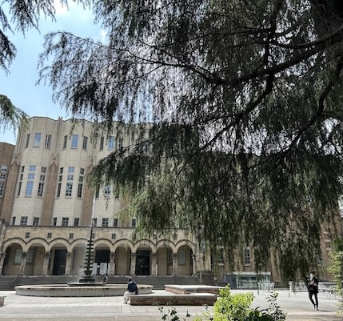
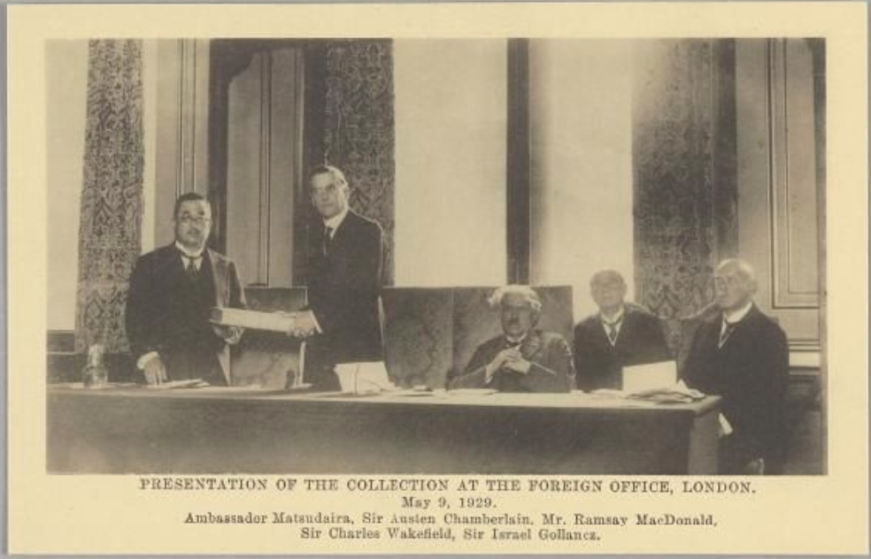
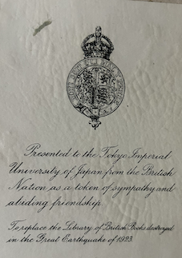

This is a follow-up post to this where I fill in some more details on how Felix Liebermann’s library ended up in Tokyo.
––––––––––––
The existence of Felix Liebermann’s library at the University of Tokyo was not known to scholars in the west until 2010 when Professor Hideyuki Arimitsu of Tōhoku University presented it at a conference.1 This fact does, however, continue to surprise people. The backstory generates further fascination, with its story of Japanese involvement in the First World War and the destruction caused by a major earthquake.
In fact, Liebermann’s is just one of several European, mostly German, personal libraries that made their way to Japan in the 1920s. Many of these belonged to important scholars of the nineteenth and early twentieth centuries, especially in law, legal history and economics. Their journeys to Japan vary. But they mostly arrived because of the availability of reparations money, increased purchasing power of Japanese academics studying in Germany, and the need for books for the many destroyed libraries in 1920’s Japan.
——————–––––
REPARATIONS
Japan declared war on the German Empire in August 1914, joining the First World War on the Allied side. Its involvement was centred around German possessions in China (German-leased land at Qingdao in Shandong) and in the Pacific (the German colonies of the Caroline, Mariana and Marshall Islands), which Japan had attacked and occupied by late 1914.2 Japan’s war-time involvement also included naval assistance in the Pacific and Mediterranean as well as a humanitarian contribution through Red Cross nurses stationed in Europe.3
Perhaps surprisingly, Japan became one of the five Principal Allies at the Paris Peace Conference and in the resulting Treaty of Versailles in 1919.4 The treaty determined that Germany was to pay reparations to the Allies and associated governments, and at the Conference of Spa in July 1920 it was decided that Japan was owed 0.75% of the total amount of reparations.5 Though the amounts demanded from Germany and the schemes for paying them changed, Japan’s share remained at 0.75%.6
One such new scheme was the Dawes Plan, implemented in July 1924. At this point, a Reparations Items Processing Committee was established in Tokyo to determine what should happen with Japan’s share.7 Over the course of the period, Japan received some cash transfers, but mostly requested payments in kind. This consisted of chemical fertiliser, agricultural products and dyestuffs (which were some of Germany’s main reparations ‘exports’), as well as cars, ammonia, hydraulic materials, wireless equipment, machinery, steel, electrical material, hops, and a submarine cable.8
In July 1926, the Japanese Committee determined that funds could also be spent on books from Germany which were to be purchased by the Department of Finance, but held by Japanese universities.9 Reports show that Japan requested books and periodicals to a total value of 749,000 Reichsmark, all between 1927 and 1929.10
For the University of Tokyo, the library of the German legal scholar Albert Osterrieth (1865–1926) was purchased in January 1927, after the Japanese ambassador in Germany approached the scholar’s widow.11 The library of Hugo Preuss, another German legal scholar and politician, was purchased in October 1927, after being requested by the University’s president Yoshinao Kozai.12
No records survive to give us further details about the purchase of Liebermann’s library, except that it was bought in the fourth year of the Dawes plan (September 1927 to August 1928).13 That period can be narrowed down somewhat. In a letter dated to 20 May 1928, the Chief Librarian of Tokyo Imperial University, Anesaki Masaharu, stated that “a part of the German reparation money is being spent on purchase of books and we have recently acquired three remarkable libraries collected by German professors”.14 This must surely refer to Osterrieth, Preuss and Liebermann, the only three collections acquired for Tokyo Imperial University with the reparations funds.15

Chief librarian Anesaki Masaharu with parts of the destroyed library, May 1926. Courtesy of the Rockefeller Archive CenterOther universities received reparations books too. The library of Georg von Mayr (German statistician) was purchased for Kyoto Imperial University in the fifth Dawes year (received in May 1929), and the collections of Julius Hatchek, Andreas von Thur and Friedrich Thaner followed in 1931.16 The University of Kuyshu was granted 50,000 marks (or 27,500 yen) of the reparations money in 1927 and had acquired some 3000 books by 1929.17
I have been unable to find out which other collections were bought with reparations. According to the 1937 catalogue for Liebermann’s library, it was purchased for 45,000 marks, so the total of 750,000 marks must have stretched to several collections, in addition to books which were purchased individually. The reparations books at the University of Tokyo are marked with a stamp from the Department of Finance, which is presumably also the case for other books, so identifying them should be possible.

All the reparations books carry a stamp from the Department of Finance (大蔵省賠償金特別会計所属図書 “Books Pertaining to Department of Finance Special Account for Reparations”). Courtesy of the Department of English Library, University of TokyoRESTORATION AND INTELLECTUAL AID
The reason Japanese universities were in need of such collections was the destruction wrought by the Great Kantō Earthquake of 1 September 1923. This devastating earthquake and resulting fire completely destroyed the General Library of Tokyo Imperial University, which lost almost all its 700,000 volumes.18

Parts of the Library of Tokyo Imperial University after the 1923 earthquake. Courtesy of the General Library, University of TokyoThe University and government started the restoration work almost immediately. The Japanese government gave Tokyo Imperial University 1.3 million yen towards rebuilding and restocking the library. Japanese embassies contacted local universities, learned societies and individuals asking them to contribute with money or books.19 The University president, Yoshinao Kozai, reached out to universities, statesmen and ambassadors, sending, for instance, a letter of appeal to the General Secretary of the League of Nations in November 1923.20 After further urging by a Japanese member, the International Committee on Intellectual Cooperation at the League of Nations put out a global appeal for donations of books.21
Individual academics contributed too, like Takayanagi Kenzō, a legal scholar at Tokyo University, who travelled to the US to talk to potential donors and helpers, including John D. Rockefeller.22 Foreign academics and officials in Japan made appeals in their home countries, including the German ambassador Wilhelm Solf, the British ambassador Sir Charles Eliot and the British poet Robert Nichols, who worked as a lecturer at the University of Tokyo.23
The speed with which the process of rebuilding started should, of course, be credited to these efforts, but also to the fact that there was precedence for such restoration schemes. The University libraries of Louvain in Belgium and Belgrade in Serbia were both destroyed in 1914. The rebuilding and restocking of these libraries, especially that in Louvain, had seen the establishment of committees around the world charged with acquiring book donations.24 In fact, Japan had its own committee for donations to Louvain, set up in 1922, and their work on acquiring and sending books to Louvain continued even after disaster struck in their own country.25 Japan sent around 14,000 books to Belgium, while Belgium sent 7,500 books to Japan.26 Similar committees for donations to Japan were set up globally, with fourteen groups donating books on behalf of their nations.27
In fact, there was also a more general system for this kind of intellectual aid in the 1920s. The financial hardship and lack of access to academic resources after the war led to several such schemes being set up, for instance the ‘British Committee for Aiding Men of Letters and Science in Russia’.28 The International Committee for Intellectual Cooperation, part of the League of Nations, issued appeals on behalf of intellectuals in Austria and Hungary in 1922 and 1924, requesting book donations.29
The situation was especially dire in Germany with its post-war inflation and financial trouble. The cost of literature meant that scholars struggled to keep up with developments in their field. For example, international subscriptions in the Prussian State Library dropped from 2300 before the war to 140 by 1920.30 A departmental library at the University of Munich had a budget of 2000 marks in 1922, but the subscription to a single international journal cost 10,000 marks.31 Publishing within Germany was also slowed down because of the high cost of paper.32 Liebermann himself noticed the consequences of this: he mentioned in a letter to an English colleague in 1921 that a review he had written had been cut to a fifth of the original length because the journal was reduced to a fifth due to this cost.33
Intellectual aid was provided to German scholars in the form of literature, money, scientific instruments and fellowships, including by American, British and Japanese committees and funds.34 In some ways, these were a continuation of intellectual aid programmes set up during the war, for instance, the Auskunfts- und Hilfsstelle für Deutsche im Ausland und Ausländer in Deutschland established by Elisabeth Rotten, which provided scientific equipment and books to prisoners of war so that they could continue (or start) their education.35 In fact, Liebermann himself had contributed to this effort by lending books to a British prisoner in the Ruhleben camp near Berlin.36 Little did he know that his own library, including the books that had been on loan to Ruhleben, would end up in Tokyo through the same mechanism of intellectual aid.
ACQUIRING BOOKS AND MONEY
Japanese efforts in the aftermath of the earthquake could therefore draw on an established system of intellectual aid. And it paid off. By early 1926, Tokyo University library had already acquired 409,009 volumes (362,000 of which were donations).37 And the donations kept coming until the end of the decade: by 1930, Britain had donated 56,000 books, Germany around 25,700 and America 95,000.38 Already in May 1928, Chief Librarian Anesaki Masaharu could announce that they had almost restored the number (and quality) of the books they had lost.39

Librarians sorting through incoming donations and purchases. Courtesy of The University of Tokyo General LibraryThe university also received money. According to a report published in February 1926, donors included J.P. Morgan Jr., an American banker, who donated 5000 dollars, professors at the law faculty at the University of Paris, who donated 1000 Franc, and a group of Japanese students at the University of California, who donated 455 yen.40 The biggest donation came on the last day of the year in 1924, when the American businessman John D. Rockefeller informed university president Kozai that he was donating four million yen to the restoration of the library.41 This was enough to build a grand new library, completed in 1928, as we can still see today.

The Rockefeller-financed General Library today.This meant that most of the Japanese government’s restoration grant could be spent on books. For the most part, the funds went towards acquiring whole collections, including those of the scholars Otto Hirschfeld (German ancient historian), Sir Charles Eliot (British orientalist and ambassador to Japan), Adolf Wach (German legal scholar), Friedrich Neubecker (German legal scholar), Kintaro Okamura (Japanese botanist), Juro Agawa (Japanese engineer) and others.42 Presumably, the purchase of Eliot’s collection (around 7,500 books) was organised directly, given that Eliot lived in Japan and had close contacts at the University, first as British ambassador between 1920 and 1925 and later as a scholar of Japanese buddhism.
BRITISH DONATIONS TO THE UNIVERSITY OF TOKYO
In fact, Eliot himself played an important role in liaising between the University and British authorities in the period after the earthquake, a connection which would ultimately lead to a major donation from the British government to the University of Tokyo.43 This well-documented case of book donation is worth a closer look.
After an initial gift of £10,000,44 British authorities were prepared to contribute more, partly due to a worry of being outdone by other nations,45 which was particularly important to avoid given that the Anglo-Japanese Alliance had ended only a year or so earlier.46 Once the requests from Tokyo Imperial University started to come in – through appeals by university president Kozai, the Japanese minister of justice and others – books quickly came to be seen as the most promising way to make a donation.47
The concern (alongside providing aid) was British influence in Japan. “Bully-beef is soon consumed, tents in time worn out”, as a memo by the British poet and lecturer at the University of Tokyo, Robert Nichols, explained, but “the sight of books given by the British Government can exert its influence on generations of students.”48 This memo was sent to the Foreign Office and the Treasury, at the behest of the British embassy in Tokyo, and explained how book donations could be important for Britain’s long-term influence in Japan. According to Nichols, there were British, American, German and French factions at Tokyo University; the “science side of the University is almost to a man under German influence” and there was also considerable German influence in technology and law.49 The fact that many young Japanese had in the past been pro-German could probably be explained by the ready availability of German books, according to Nichols.
He went on to say that “the best and most far-sighted sections of the University are undoubtedly pro-American and more particularly pro-English…[but] the dropping of the alliance has discouraged them somewhat and the pro-German sections are working tooth and nail…to stage a ‘come back’”.50 He therefore urged the British government quickly to make a gift of books, adding that: “These books get at and continue to get at the future intelligentsia, government officials etc. of the country”. As a Treasury official noted in agreement, books had “good propaganda results”.51
The choice of Tokyo Imperial University as the recipient – above other universities which had suffered equal amounts of damage – was related to the same desire to secure a position for Britain. Nichols pointed out to British officials that Tokyo University had a unique influence in Japanese society and that politicians, officials and other universities took their lead from Tokyo.52 Similar sentiments were circulated in an appeal to the League of Nations by Nitobe Inazō – at the time, a Japanese official in the International Committee on Intellectual Cooperation – who said that
“the reconstruction of Tokyo means…not merely that of a town or a city, but of the capital of the whole nation…The most important institution, the oldest, highest and largest, which has suffered severely, is the Imperial [Tokyo] University”.53 Lord Curzon, the British Foreign Secretary, took this to heart and wrote to Lord Balfour, the president of the British Academy, that “The appeal of the Imperial [Tokyo] University, which is the training-ground of almost all the future officials of the Japanese Government, offers an opportunity to provide a permanent evidence of our feelings…”.54
In the end, British authorities were convinced by the arguments of Nichols, ambassador Eliot and others in Japan. Despite some reluctance to find the money by the ‘Treasury tyrants’ – as Nichols called them in a letter accompanying the memo – the donation by the British government to Japan of £25,000 was eventually made in the summer of 1924, which was to take the form of books for Tokyo Imperial University.55
This donation was administered by a committee set up by the British Academy (led by Lord Balfour, Israel Gollancz and Charles Wakefield), who had already in December 1923 started collecting donations for Japan from individuals and societies. For the government donation, the British Academy committee worked from book lists sent by Japanese academics and from lists compiled by British experts in various fields.56 The books themselves were purchased by His Majesty’s Stationary’s Office and were shipped to Tokyo for free by Mitsubishi’s branch in London.57

Members of the BA committee with the Japanese ambassador to Britain at the end of the project. Courtesy of the University of Tokyo General LibraryThis proved to be a rather bigger project than first anticipated, taking almost a decade to complete58 But all told, Britain donated 56,000 books in 70,000 volumes through the BA committee. Of these, 35,639 had been bought with money from the British government while the rest were donations from individuals, universities and learned societies.
These books can still be found in the stacks in the General Library in Tokyo, bearing the inscription
“Presented to the Tokyo Imperial University from the British Nation as a token of sympathy and abiding friendship”. The British books are the only ones among the national donations to carry a bespoke label – other donations have a generic label inserted by Tokyo University (with the relevant country inscribed). This label was, of course, an important aspect of the soft power that Britain hoped the donation would exert: “Book bearing inside their covers a plate or inscription showing that they are the gift of His Majesty’s Government will remain a standing and constantly refreshed record of the presentation and will in this way perpetuate the memory of a kindly act,” as a Foreign Office official remarked.59

The British donation label. Courtesy of the Department of English Library, University of TokyoBut there was also a less politically motivated idea behind the decision to concentrate on intellectual aid. As the Treasury official Roderick Meiklejohn noted, a gift of books “is one which one great nation may make & another receive with due dignity”.60 Nichols thought the same. To him, books had a “refinement about it that would I think appeal to a nation full of reverence for learning and enthusiasm for education…I have never known a nation who did so much and so serious reading”.61
GERMAN CONNECTIONS AND COLLECTIONS
As a nation, Britain donated about twice as many books as Germany. But there were many other routes by which German books made their way to Japan in the 1920s. If we’re counting whole collections or private libraries, German books certainly outnumber British in Japanese library holdings. The reparations collections we have already heard about, as well as the many German collections purchased with the University’s own restoration fund. As we’ll see now, the close academic ties between Germany and Japan also led to Japanese scholars buying up books while they were studying and working in Germany.
From the time of the Meiji restoration in 1868, Germans became influential in the fields of medicine, philosophy and law, with many academics invited to take up posts in Japan.62 The Meiji constitution of 1889 used the Prussian constitution as a model, and German legal scholarship continued to be important alongside German academic and industrial knowledge in chemistry, medicine and military matters.63 Many academics could speak and read German and professional societies were set up to foster collaboration, for instance the Verein für Deutsche Wissenschaften,64 Deutsche Gesellschaft für Natur- und Völkerkunde Ostasiens (OAG),65 and the Japanisch-Deutsche Gesellschaft.66
Not only were German scholars invited to Japan, but many Japanese scholars went to Germany on government grants for foreign research and study. Germany was by far the most popular destination, with around 80% of grant-holders choosing German universities at the start of the 20th century.67 A database of Japanese scholars in Germany lists almost 2700 individuals who studied or researched in Germany between 1868 and 1914.68 The First World War necessarily paused this exchange, but it continued in the 1920s, and in 1929 c. 55% of grant-holders chose to go to Germany.69
Many of these travelling scholars – who were often assistant professors rather than students – brought back books to Japan, especially during the post-war period of hyperinflation in Germany when books could be bought for cheap.
Among the important collections still present in Japanese libraries today which arrived by this route are the libraries of Paul Eltzbacher (a German legal scholar of anarchism), Carl Menger (an Austrian economist) and Otto von Gierke (a German legal scholar and historian).70 The libraries of Menger and Gierke can be found in the holdings of Hitotsubashi University (Tokyo), while Eltzbacher’s is in the Ōhara Institute of Social Science (Tokyo).
The University of Kyūshū acquired several collections through travelling academics, namely those of Gustav Gross (Austrian politician and economist), Philipp Lotmar (German legal scholar), Paul Barth (German philosopher) and Carl Stumpf (German philosopher and psychologist). These were purchased by the scholars Takachika Iguchi and Omori Kenzo on behalf of Kyūshū University around 1925–26.71
The University of Tohoku acquired the libraries of Friedrich Stein (German legal scholar), Emil Seckel (German legal scholar and historian, acquired 1926 by Takeo Kuryu of Tohoku University), Wilhelm Wundt (German psychologist, acquired in 1926 by Tanenari Chiba of Tohoku University), and Ernst Zitelmann (German legal scholar; acquired in 1924 by Bunjiro Ishida of Tohoku University).72
In fact, the number of Japanese academics buying books at this time was so high that the bookseller Hugo Streisand in Berlin commented on it in his memoirs. According to him, many were particularly interested in social science, economics and Marxist literature.73 For instance, Professor Itsurō Sakisaka, an economist at the University of Kyūshū, bought Marxist books during his stay in Germany 1922–1925,74 and the former University of Tokyo economist Morito Tatsuo purchased books for himself as well as collections for the Ōhara Institute of Social Science.75 As Streisand mentioned, many of these scholars were radical socialists, several of whom were imprisoned later on in Japan, and were often interested in acquiring literature on these topics.76 But Streisand’s also had Japanese customers interested in books on subjects like Goethe, Old Testament prophets, floor oil and historical German dictionaries.77
Many of the collections acquired by Japanese universities and academics – whether with reparations funds or private money – were from scholars who died in the mid 1920s (e.g. Liebermann, Hugo Preuss and Andreas von Thur, who died in in 1925, and Albert Osterrieth and Julius Hatschek, who died in 1926). However, some were purchased from the German scholars themselves. For instance, Werner Sombard apparently sold the Marxist portion of his library – after a change of political conviction – to Japanese scholars who took it to Osaka.78 Parts of Paul Eltzbacher’s library was bought from him directly by Morito Tatsuo and Kushida Tamizō.79 Karl Bücher’s library on political and social sciences was bought from him by Iwasaki Koyata, president of Mitsubishi, who donated it to Kyoto University.80 Many books belonging to Hugo Falkenheim, a German philosopher and literature scholar, are also in Tokyo University library – they are marked as being part of the donation from the German nation in 1923, so presumably Falkenheim sold (parts of) his library before his death in 1935, given that the German donations seem to have reached Tokyo by 1930. Apart from Sombard’s change of political heart, we don’t know much about why they decided to sell, but the general financial difficulties for academics at the time must have played a part.81Liebermann, for example, had contemplated selling his library because of his financial situation, and it’s probable that there were other scholars in similar situations.82
CONCLUSION
These many collections and libraries belonging to famous European scholars should be of interested to historians. Most belonged to scholars who made their names in the second half of the 19th century – such as Otto von Gierke and Hugo Preuss – representing an important period in German scholarship, especially legal.
Some collections are catalogued, but many are not (nor have they been kept together as a collection), so research can be challenging. But as my study of Felix Liebermann’s library has shown, there is much to be gained: from personal information in letters and notes to unpublished academic thoughts to displays of editing methods, and, perhaps most importantly, a better view of the intellectual formation of scholars in the 19th century.
––––––––––––––––––––––––––––––––––––
Abbreviations
BAA — British Academy Archive, London JACAR — Japan Center for Asian Historical Records/National Archive of Japan, Tokyo NA — The National Archives, London OMR — Office of the Messrs. Rockefeller RAC — Rockefeller Archive Centre, NY UNLA — United Nations Library & Archive, Geneva
-
Hideyuki Arimitsu, ‘The Liebermann Library in Tokyo’, in S. Jurasinski (et al) (eds), English Law Before Magna Carta: Felix Liebermann and Die Gesetze der Angelsachsen (2010), pp. 27–40. ↩
-
See e.g. Xu Guoqui, ‘The Great War in China and Japan’, in A. Best and O. Frattolillo (eds), Japan and the Great War (2015), p. 15 and Best and Frattolillo,‘Introduction’, in the same volume, p. 4. ↩
-
F.R. Dickinson, ‘Tragic war, lasting peace: Japan and the construction of global peace 1919–1930’, in Toshihiro Minohara and E.N. Dawley (eds), Beyond Versailles: the 1919 moment and a new order in East Asia (2021), pp. 251–2. H. Deleu, ‘Sagas of swords, scrolls, and dolls: Japanese humanitarian aid to Belgium’, in E. Piller and N. Wylie (eds), Humanitarianism and the Greater War, 1914–24 (2026), p. 60. ↩
-
Treaty of Versailles; see also Frattolillo and Best, ‘Introduction’, p. 4. ↩
-
Treaty of Versailles, Article 237. Treaty of Spa, Article 1; in ‘Reparation. Agreement between the allies for the settlement of certain questions as to the application of the treaties of peace and complementary agreements with Germany, Austria, Hungary, and Bulgaria, signed at Spa, July 16, 1920’, His Majesty’s Stationary Office (1922), p. 2. The so-called ‘Spa percentages’, i.e. the share of the total of the reparations owed to each country, were as follows: France 52%, Britain 22%, Italy 10%, Belgium 8%, Portugal 0.75% and Japan 0.75%, with 6.5% to be divided among remaining governments. Japan was also granted rights to Qingdao in the Treaty of Versailles (Articles 156–158), though the peninsula was returned to China in 1922; see Guoqui, ‘The Great War in China and Japan’, pp. 23–7. ↩
-
For an overview of these reparations, see e.g. L. Gomes, German Reparations 1919–1932 (2010), pp. 141–164. That Japan’s share remained the same is clear from the accounts of the Dawes plan payments, where Japan is always listed as being owed .75% of the totals. See e.g. ‘Documents relating to revenue accrued by “Dawes” annual payment’, National Archive of Japan [JACAR], Diplomatic Archives of the Ministry of Foreign Affairs, ID: B04013879200, Shelf mark: B.8.0.0.1-8. ↩
-
Tatsuo Araki and Wakako Takayama, ‘On “Books Pertaining to Department of Finance Special Account for Reparations” in University of Tokyo Library Collection: Whereabouts of Books Received in Lieu of German Reparations After World War I’, Catalog of the University of Tokyo Asian Research Library Digital Collections 2017-2023 (2024). I am very grateful to Dr Tatsuo Araki and Ms Wakako Takayama of the University of Tokyo for sharing additional research with me. ↩
-
The annual reports from the Agent General for Reparations Payments contain information on what made up Japan’s ‘miscellaneous deliveries’. Most can be accessed online: ‘Report of the Agent General for Reparations Payments’, His Majesty’s Stationary Office (June 1926), p. 6. ‘Report of the Agent General for Reparations Payments’, His Majesty’s Stationary Office (June 1927), p. 18. ‘Report of the Agent General for Reparations Payments’ (1928), p. 20 in JACAR, Diplomatic Archives of the Ministry of Foreign Affairs, ID: B04013916300, Shelf Mark: B.8.2.0.2. ‘Report of the Agent General for Reparations Payments’ (1929), p. 19 in JACAR, Diplomatic Archives of the Ministry of Foreign Affairs, ID: B04013916500, Shelf Mark B.8.2.0.2. Many of the other accounts for Japanese reparations (in English and French) can be found here, including credit notes for payments etc: https://www.jacar.archives.go.jp/das/meta-en/BA0210090301. ↩
-
I am grateful to Dr Araki and Ms Takayama for sharing this information with me; the relevant document is ’Reparation Issues Settlement Committee’, JACAR,Diplomatic Archives of the Ministry of Foreign Affairs, ID: B06150491500, Shelf Mark 2.3.1.151. ↩
-
‘Report of the Agent General for Reparations Payments’ (1928), p. 20 and ‘Report of the Agent General for Reparations Payments’ (1929), p. 19. This sum seems to correspond to c. £36,000 or $178,300 at the time, according to exchange rates contained in the credit notes issued for these purchases, corresponding to c. £1.5 million today. ↩
-
I am grateful to Dr Araki and Ms Takayama for sharing this information with me. ↩
-
‘Miscellaneous documents relating to reparation for European War. Documents relating to commission on disposal of reparation property’, JACAR, Diplomatic Archives of the Ministry of Foreign Affairs, ID: B04013877500, Shelf mark: B.8.0.0.1-2. ↩
-
This is inscribed in a catalogue of Liebermann’s books from 1937: リーベルマン文庫目録 (1937), University of Tokyo General Library, Shelf Mark 目録:LI:1. Dr Araki and Ms Takayama searched available records in Japan and have found nothing related to Liebermann specifically. ↩
-
Anesaki Masaharu to John D. Rockefeller Jr, 20 May 1928, Rockefeller Archive Centre [RAC], Office of the Messrs. Rockefeller [OMR], Series G, Box 130, Folder 996. See also T. Irish, Feeding the Mind: Humanitarianism and the Reconstruction of European Intellectual Life, 1919–1933 (2023), p. 185. I am very grateful to Professor Irish for sharing some of these archival sources with me. ↩
-
See M. Koch, Universitäre Sondersammlungen in Japan: eine deutsch-japanische annotierte Bibliographie (2004), also available as an online database ↩
-
九州大学新聞. 2, 1927-07-10. 九大法文会. I’d like to thank Dr Araki and Ms Takayama for informing me of the content of this article on University of Kyushu’s reparations and providing further information about Kyushu’s books. ↩
-
Anesaki Masaharu and Yamada Tamaki, ‘First Report on the Reconstruction of the Tokyo Imperial University Library’ (1926), RAC/OMR, Series G, Box 130, Folder 994, pp. 1, 3. This report is also available online through the United Nations Archives R1059/13C/52329/31006 ↩
-
Irish, Feeding the Mind, pp. 183-4. ↩
-
Letter from Kozai to E. Drummond, 8.11.1923, UNLA R1059-13C-32411-31006. ↩
-
Irish, Feeding the Mind, pp. 182-3. ↩
-
Irish, Feeding the Mind, p. 184. ↩
-
For Eliot and Nichols, see below. For Wilhelm Solf, see for instance the letter he sent to the German Foreign Office 17.9.1923 requesting books and scientific instruments for Japan; printed in F. Käser (ed.), Deutschland und das Grosse Kantō-Erdbeben von 1923: Quellen aus deutschen Archiven (2014), pp. 74–5. See also O.H. Lister, ‘‘We Really are Doing Nothing’: The British Government, Humanitarian Aid in Japan, and the Great Kanto Earthquake of September 1923’ (PhD thesis, University of Sheffield), 2026), pp. 157–60. ↩
-
Irish, Feeding the Mind, pp. 155-190. ↩
-
W. Vande Walle, ‘The Japanese Book Donation to the University of Louvain’, in J. Schmid et al. (eds), Japan’s Book Donation to the University of Louvain: Japanese Cultural Identity and Modernity in the 1920s (2022), p. 44. ↩
-
Walle, ‘Japanese Book Donation’, p. 53. ‘Reconstruction Album containing the Final Report on the Reconstruction of the Tokyo Imperial Library 1923–1929’ (1930), p. 8, British Academy Archives [BAA] DWP/3/1/6. ↩
-
These were Britain, USA, Belgium, China, France, Germany, Greece, Italy, Netherlands, Siam, Spain, Sweden, Switzerland and the U.S.S.R; ‘Reconstruction album’, pp. 6–10. ↩
-
Irish, Feeding the Mind, p. 94. ↩
-
T. Irish, ‘‘The most deplorable victims’? The language of humanitarianism and relief to intellectuals in the era of the Great War’, in E. Piller and N. Wylie (eds), Humanitarianism and the Greater War, 1914–24 (2026), p. 241. ↩
-
E. Piller, ‘“Can the Science of the World Allow This?”: German Academic Distress, Foreign Aid and the Cultural Demobilization of the Academic World, 1919–1925’, in M.-E. Chagnon and T. Irish (eds), The Academic World in the Era of the Great War (2018). ↩
-
B. Widdig, ‘Cultural Capital in Decline: Inflation and the Distress of Intellectuals’, in K. Canning et al. (eds), Weimar Publics/Weimar Subjects (2010), p. 304. ↩
-
Widdig, ‘Cultural capital’, p. 303. ↩
-
F. Liebermann to T.F. Tout, 24.4.1921, University of Manchester Archive, GB 133 TFT/1/699/7. ↩
-
Piller, ‘“Can the Science of the World Allow This?”’ ↩
-
M. Stibbe, British civilian internees in Germany: the Ruhleben camp, 1914-1918 (2008), pp. 144ff. ↩
-
Liebermann lent books to David Evans, who was interned at the Ruhleben camp near Berlin. Evans taught Celtic Studies at the camp school, the ‘Ruhleben University’. Liebermann lent him the following: F. Seebohm, The Tribal System in Wales (1904) [University of Tokyo library S000:820]; F.J. Haverfield, The Romanization of Roman Britain (1905) [University of Tokyo library G300:463]; H.M. Scarth, Early Britain. Roman Britain (1883) [University of Tokyo library G610:1381]; F.J. Haverfield, The Romanization of Roman Britain, 2nd ed (1912) [University of Tokyo library G610:1388]. ↩
-
Masaharu and Tamaki, ‘First Report on the reconstruction’, p. 5. ↩
-
‘Reconstruction Album’, pp. 6–8. D.W. Pearson, ‘Report on the British Gift of Books to the Tokyo Imperial University Library 1923–1933’, His Majesty’s Stationary Office (1934), p. 8, BAA DWP/3/1/7. The ‘Reconstruction Album’, prepared at the University of Tokyo, says Britain donated 70,000 volumes, whereas the British number from Pearson’s report is presumably counting titles only. ↩
-
Anesaki Masaharu to John D. Rockefeller Jr, 20.05.1928, RAC/OMR, Series G, Box 130, Folder 996 ↩
-
Masaharu and Tamaki, ‘First Report on the reconstruction’, pp. 9–10, 39. ↩
-
The letter written from Rockefeller pledging his donation can be seen in reproduction in the Memorial Room in the General Library or here. A plaque outside the General Library states that Rockefeller’s four million yen donation is equivalent to 10 billion yen in modern money (as of 2008). ↩
-
Masaharu and Tamaki, ‘First Report on the reconstruction’, pp. 10–11. Some information on these collections can be found here. See also https://www.lib.u-tokyo.ac.jp/ja/library/general/collectionall. ↩
-
E.g. Sir Eliot to Curzon 22.11.1923 National Archive, London [NA] T/161/516/1, Eliot to Curzon 12.11.1923 NA FO/262/1586, Eliot to Tyrell 13.09.1923, NA T/161/516/1. ↩
-
This was given immediately after the earthquake for food and other supplies; ‘Contribution by his Majesty’s Government for Earthquake Relief in Japan’ (1923), NA FO/262/1586, p. 373 ↩
-
‘Contribution by his Majesty’s Government for Earthquake Relief in Japan’, Cabinet brief, 1923, NA FO/262/1586, p. 373 ↩
-
For this sentiment expressed directly, see Foreign Office to the Secretary to the Treasury, 9.10.1923, NA T/161/516/1. For the Alliance itself, see Fumitaka Kurosawa, ‘Great Britain and Japanese Views of the International Order in the Interwar Period’, in P. Towle and N. Kosuge (eds), Britain and Japan in the Twentieth Century (2007), p. 33. ↩
-
See e.g. Eliot to Curzon 22.11.1923 NA T/161/516/1; Eliot to Curzon 10.11.1923, NA FO/262/1586; Yoshinao Kozai to Palairet [British chargé d’affaires in Tokyo] 4.10.1923 NA FO/262/1586. ↩
-
Robert Nichols, ‘Memorandum’, November 1923, NA FO/262/1586, p. 472. The Treasury copy is found at NA T/161/516/1. ↩
-
Nichols, ‘Memorandum’. ↩
-
Nichols, ‘Memorandum’. ↩
-
L. Collier to the Secretary to the Treasury, 14.2.1924 and note by R. S. Meiklejohn, 22.2.1924, NA T/161/516/1 ↩
-
Nichols, ‘Memorandum’. ↩
-
Request submitted by Nitobe Inazō to the Committee on Intellectual Cooperation, 29.11.1923, UNLA R1059-13C-32411-31006. ↩
-
Lord Curzon to Lord Balfour, 20.10.1923, BAA/GOV/2/2/6. What’s more, Tokyo University probably had some name-recognition too that other universities lacked. For instance, Meiji University wrote to the University of Oxford asking if they had books they could donate, since Meiji too had lost most of their library. To this letter is attached a note written by someone at Oxford which states that they hadn’t heard of Meiji University, and that they were unable to find out anything about it, wondering whether it was just a different name for the Imperial University; T. Fujimori to the President of Oxford University, 24.12.1923, BAA DWP/3/2/1 3/4. ↩
-
D. Smith, ‘Sir Charles Eliot (1862–1931) and Japan’ in Hugh Cortazzi & Gordon Daniels (eds), Britain and Japan, 1859-1991: themes and personalities (1992), p. 192. Sir C. Eliot to Lord Curzon 22.11.1923, NA T/161/516/1; Eliot to Curzon, 10.11.1923, NA FO/262/1586; also ‘Contribution by his Majesty’s Government for Earthquake Relief in Japan’, Cabinet brief, 1923, NA FO/262/1586, p. 373. Eliot also donated £500 of his own money towards relief; see Ijuin Hikokichi to H. G. Palairet, 5.11.1923, NA FO/262/1586, p. 478. A potential donation from Britain was debated in the Foreign Office and Treasury from November 1923 – first with a sum of £100,000 proposed; see e.g. L. Collier to the Secretary to the Treasury, 14.2.1924; V. Wellesley to Headlam, 8.2.1924 and associated notes; NA T/161/516/1. ↩
-
Pearson, ‘Report on the British Gift’, p. 6. ↩
-
Pearson, ‘Report on the British Gift’, p. 6. ↩
-
Pearson, ‘Report on the British Gift’, p. 8; ‘Reconstruction Album’, p. 6. ↩
-
L. Collier to the Secretary to the Treasury, 14.2.1924, NA T/161/516/1; also Sir Eliot to Lord Curzon, 12.11.1923, NA FO/262/1586. ↩
-
Note by R. S. Meiklejohn, 22.2.1924, NA T/161/516/1 ↩
-
Nichols, ‘Memorandum’. ↩
-
Katō Tetsurō, ‘Personal contacts in Japanese-German cultural relations in the 1920s and early 1930s’, in C. Spang and R.-H. Wippich (eds), Japanese-German relations, 1895-1945: war, diplomacy and public opinion (2006), pp. 119-138, at p. 123. ↩
-
See e.g. Andō Junko, ‘Japan und die Preussische Verfassung’, in G. Krebs (ed.), Japan und Preussen (2002), pp. 16–184. ↩
-
独逸学協会 ↩
-
ドイツ東洋文化研究協会 ↩
-
日独協会. See Katō Tetsurō, ‘Personal contacts in Japanese-German cultural relations’, p. 121. ↩
-
Katō Tetsurō, ‘Personal contacts in Japanese-German cultural relations’, pp. 123-4. ↩
-
Katō Tetsurō, ‘Personal contacts in Japanese-German cultural relations’, p. 124. For a general overview of the relationship between Japan and Germany in this period, see C.W. Spang and R.H. Wippich, ‘Introduction — from ‘German Measles’ to ‘Honorary Aryans’’, in Spang and Wippich (eds), Japanese-German relations, 1895-1945: war, diplomacy and public opinion (2006), pp. 1–18. ↩
-
Katō Tetsurō, ‘Personal contacts in Japanese-German cultural relations’, fn. 5. See the Sondersammlungen database for further information. ↩
-
Thanks to Dr Araki and Ms. Takayama for sharing this information with me; see also Kajishima Masashi, ‘Studies of the library building and research students abroad of foundation of the law and literature department at Kyushu Imperial University period’, Bulletin of the Research Institute of Kyushu Cultural History 56 (2013) [in Japanese]. ↩
-
A short description can be found here, with some further information on the Sondersammlungen database. ↩
-
Hugo Streisand, Ein halbes Jahrhundert mit Büchern 1901–1951 (1951), p. 60. ↩
-
Streisand, Ein halbes Jahrhundert, p. 60 ↩
-
Katō Tetsurō, ‘Personal contacts in Japanese-German cultural relations’, fn. 5. Sondersammlungen database ↩
-
Streisand, Ein halbes Jahrhundert, pp. 60–61. ↩
-
Streisand, Ein halbes Jahrhundert, p. 60. ↩
-
Sondersammlungen. See also Streisand, Ein halbes Jahrhundert, p. 60. ↩
-
Widdig, ‘Cultural Capital in Decline’. ↩
-
Statement by F. Liebermann, 26.02.1924, Archives of the Royal Historical Society, London, RHS/3/11. ↩